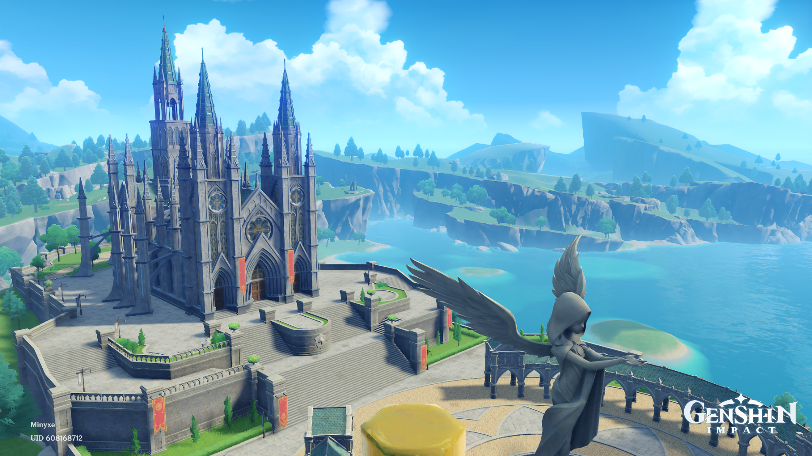

Mondstadt
The starting zone of the player.
A city of freedom that lies in the northeast of Teyvat.
This city is a gift from the Anemo (wind) god, Barbatos.
The prologue and its three acts starts in this region.
The game is set in the world called "Theyvat, where the seven elements flow and converge".
Every nation worships it's own god, who each have high levels of control over one of the elements.
Every Nation has its own theme. Depending on the theme, architecture and names of characters and/or NPC's can differ from each other.
The starting zone of the player.
A city of freedom that lies in the northeast of Teyvat.
This city is a gift from the Anemo (wind) god, Barbatos.
The prologue and its three acts starts in this region.
There's a beautiful harbor that lies in the east of Liyue.
This place has a Chinese theme.
This city-state worships the Geo (earth) god, Rex Lapis.
Act 1: Farewell, Archaid Lord, takes place in this region.
This city-state worships the Electro (lightning) god, The Immortal Shogun.
The buildings of this are are supposed to have a Japanese theme.
Act 2: Omniprescence Over Mortals, takes place in this region.
Region is unreleased.
This region is considered the center of learning.
This area is supposed to have a Middle East/Indian theme.
It is a city-state that worships the Dendro (nature) god, The God of Wisdom.
Act 3: Truth Amongst the Pages of Purana, takes place in this region
Region is unreleased.
The buildings of this area is supposed to have a French theme.
This city-state worships the Hydro (water) god, The God of Justice.
Act 4: Masquerade of the Guilty takes place in this region
Region is unreleased.
The theme of this area is supposed to be Russian.
This city-state worships the Cryo (ice) god, The Tsaritsa.
Act 4: Everwinter Without Mercy, takes place in this region.
Region is unreleased.
This city-state worships the Pyro (fire) god, Murata.
Act 4: Incadescent Ode of Resurrection, takes place in this region